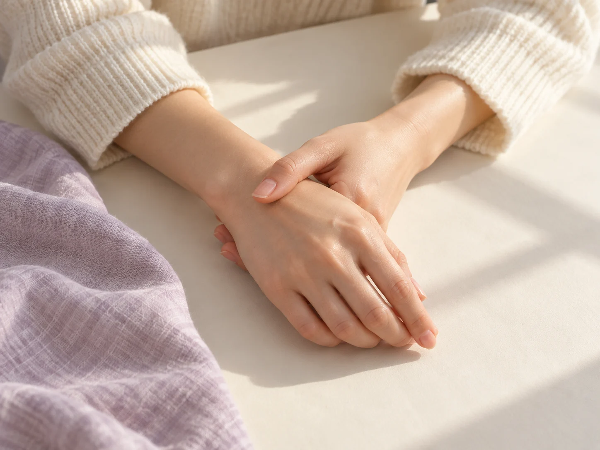
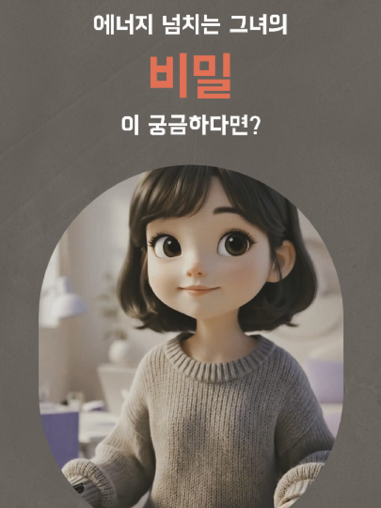
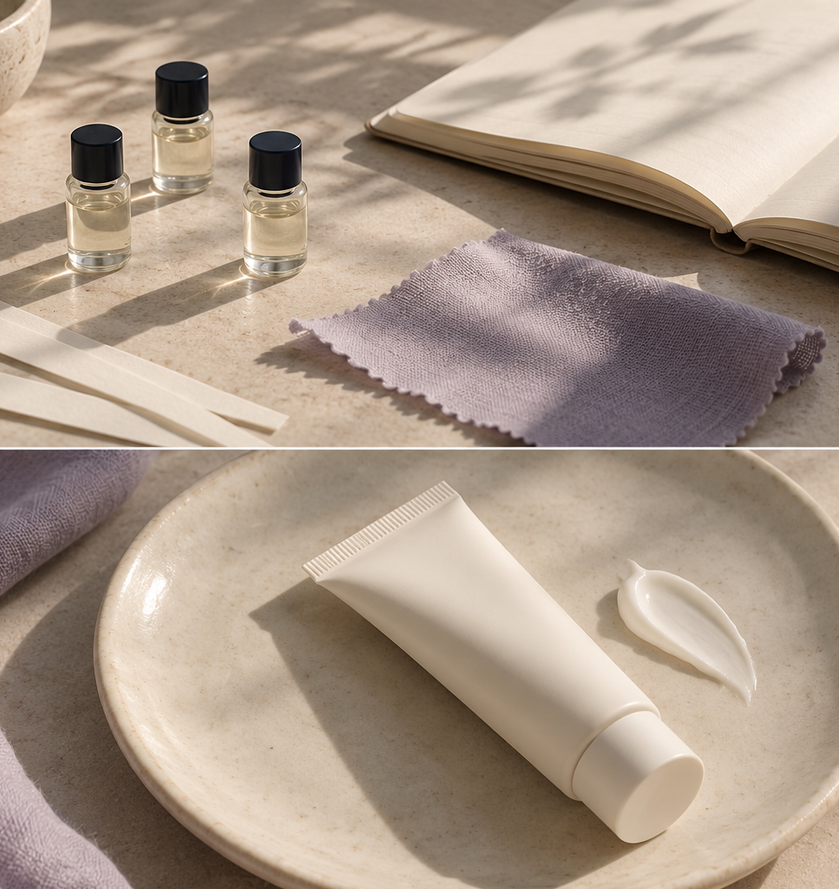
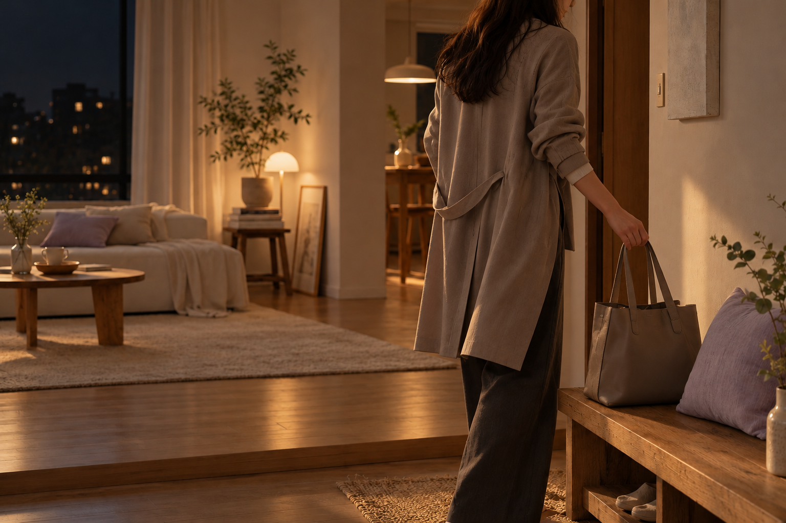
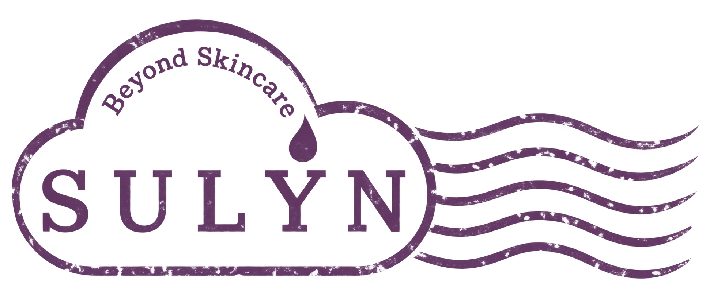

하루를 바쁘게 살다보면,
정작 나를 쉬게 하는 시간은
자꾸 뒤로 밀립니다.
그래서 수린은 특별한 시간을
따로 만들기보다,
이미 반복되는 일상 속에 작은 쉼을
담고자 했습니다.
잠깐 멈추고, 나에게 집중하는 짧은 순간.
그 몇 분이 하루의 여백이 될 수 있도록.
SULYN은 일상 가까이에서
자연스럽게 꺼내 쓸 수 있는
나만의 쉼을 만들어갑니다.
매일, 나에게 돌아오는 시간
수린을 만나는 동안만큼은,
할 일도 잠깐 내려놓아요.

수린 이야기
하루를 바쁘게 살다보면,
정작 나를 쉬게 하는 시간은
자꾸 뒤로 밀립니다.
그래서 수린은 특별한 시간을
따로 만들기보다,
이미 반복되는 일상 속에 작은 쉼을
담고자 했습니다.
잠깐 멈추고, 나에게 집중하는 짧은 순간.
그 몇 분이 하루의 여백이 될 수 있도록.
SULYN은 일상 가까이에서
자연스럽게 꺼내 쓸 수 있는
나만의 쉼을 만들어갑니다.


수린의 첫 번째 제품
매일 손에 바르는 순간에,
좋아하는 향과 잠시 머무는 시간을
담고자 합니다.


스킨케어 시간이 잠깐의 쉼이 되면 좋겠다는 생각.
수린은 그렇게 시작됐어요.
이제는 하루의 다른 순간에도 그 쉼을 전하고 싶어요.
퇴근하고도 마음은 아직 바쁜 저녁,
잠들기 전까지 무언가를 해야 할 것 같은 밤에도
자연스럽게 꺼내 쓸 수 있는 나만의 쉼을요.
From SULYN
세 단계의 질문으로 당신의 향을 만나보세요.
나만의 향 찾기